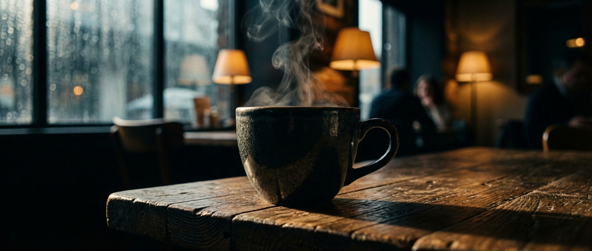

こんにちは、ナユタです。
制作会社の枠を超えて
ニストスタジオは現在、ナレーション制作やボイススクール、コンテンツ制作支援（Udatsu）を主軸に事業を展開しています。しかし、私たちが目指しているのは、単なる「制作会社」ではありません。
私たちが作りたいのは、機能やサービスだけでなく、人と人が交わる「場」そのものです。
リアルな「場所」へのこだわり
最終的な目標は、リアルな「場所」を作ることです。
そこは、クリエイターが作品を発表し、ビジネスパーソンが交流し、美味しいコーヒーを飲みながら新しいアイデアが生まれる、そんな「コミュニティスペース」です。
オンラインで完結する仕事が増えた今だからこそ、膝を突き合わせて語り合える場所の価値は高まっています。画面越しでは伝わらない熱量や、偶然の出会いから生まれる化学反応。それを大切にしたいのです。
未来のハブになるために
「ニストスタジオに行けば、面白い人に出会える」「何か新しいことが始まりそうな予感がする」。そんな風に思っていただけるハブ（拠点）になることが、私たちの長期的なビジョンです。
今はまだ小さなスタジオですが、お客様と共に成長し、いつかその「場所」で乾杯できる日を夢見て、私たちは今日も目の前の仕事に全力を注いでいます。